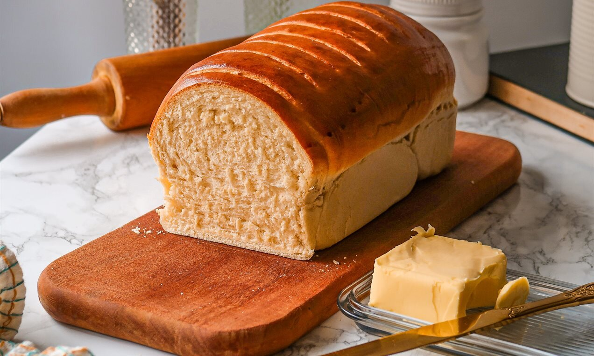

Bolo

-Ingredientes
2 xícaras (chá) de açúcar
4 colheres (sopa) de margarina
1 e 1/2 xícara (chá) de leite
3 xícaras (chá) de farinha de trigo
3 ovos
1 colher (sopa) bem cheia de fermento em pó
Pão

-Ingredientes
1 kg de farinha de trigo aproximadamente
1/2 xícara de água morna
2 ovos
1 e 1/2 xícara de leite morno (aprox. 400 ml)
1/2 xícara de óleo (aprox. 100 ml)
1/2 xícara de óleo (aprox. 100 ml)
30 g de fermento biológico fresco (ou 10 g de fermento biológico seco)
Torta

-Ingredientes Massa
400 gramas de farinha de trigo
200 gramas de manteiga gelada
1 ovo inteiro e 1 gema de ovo batidos para a massa
a gosto, pode ser uma colher de chá
6 colheres de sopa de leite
1 gema de ovo para pincelar a massa